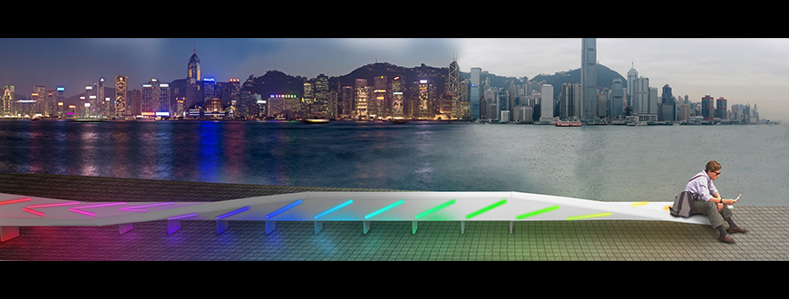

Manolis Perrakis
Portfolio
Click the ← and → arrow keys or space to navigate
WiFiShredder
Dotmatrix printer, Paper shredder, Node.js, Wireshark
The objective of the ‘WiFiShredder’ was to show how vulnerable private information can be and how easily it can be exposed. The audience without their knowledge where becoming part of the artwork, and more specifically their meta-data. Pen testing software was listening to broadcasts of nearby WiFi devices and a dot-matrix printer was continuously printing out the names of access points associated with the audience's mobile phones or other WiFi enabled device. Eventually the exposed private information was shredded, hence destroying the sensitive data.
Crafted By My Heart
A jewellery project, that derived from the idea of creating parametric sculptures based on biological data. In this case creating customised Jewellery from the user's own heartbeat
Broken Robot
AS3, Google Speech API, A.L.I.C.E. chat bots
I always wondered what would happen if I put two chat bots to discuss with each other. Using the A.L.I.C.E. chabot API I fed the responses and questions of one chatbot to another and visualised them with Flash and AS3.
Landing Strip

The Landing Strips was developed for the Kowloon East International Design Competition. The project is a series of smoothly curving modular seating units that can connect to form limitless variations of street and park benches. Each bench is equipped with proximity sensors. Depending on the number of people sitting on the bench and their proximity to each other, the colours change accordingly. The colour shifts would be a subtle signal between users or friends to highlight social interaction in the park or on the street. Each bench island is able to communicate with other benches through a digital network of light and colour. Colours can be programmed to ripple from one bench group into the next creating a colourful lattice of light across the waterfront at night.
Krebsen
Video artwork that was exhibited at the Museum of Wiesbaden as part of the "Landschaft als Weltsicht" exhibition.
A four video installation showing small Crabs being chased on the beach.
TV Povera
Thermochromic colours, 555 timers, wire resistors
This work consists of 3 big pieces of paper painted with Thermochromic inks. Behind the paper wire resistors have been installed that heat up in predefined intervals. The change of the Wire's temperature reacts with the thermocromic paint, turning it from its original colour to white.
Blinkies
Electroluminescent plastic sheets, 555 timers, Glass colouring inks
These 5 Animated drawings, were made out of Electroluminescent Sheets. Each drawing consists of a 3 EL sheets that are cut, painted and placed on top of each. Switching the top two sheets on and off creates the effect of animation.
4Boxes
MDF boxes, Canvas primer, speakers, Liquid inks
4 White Boxes coated with white acrilic primer. Each Box has a different liquid colour on top with a speaker underneath, vibrating in different frequences. The sound that comes out of the speaker, transorms into kinetic energy inside the liquid colours, creating patterns and colouring the boxes.
Chocolate Printing
Delta & Cartesian axis printers, Processing, Node.js, Air Compressor
I’ve been experimenting with 3D printing for some time now, which got me interested in paste extrusion.
Paste extrusion is when instead of extruding melted plastic you extrude a viscous material e.g. clay, chocolate, etc. For the example on the left I hacked a cartesian axis 3D printer and used compressed air to extrude the paste and controlled the flow with a airflow regulator. The audience could use a webapp to make a drawing and have the printer "draw" with chocolate on a cookie. For the second example on the right I hacked a delta printer and instead of using compressed air I used a stepper motor and a 3D printed extrusion system that I designed to do the extrusion. The second printer was controlled by Processing which was sending GCode commands directly to the 3D printer.
Dynamic Projection Mapping
PLA 3D printer, Processing, Projector
Exploring the possibilities of Projection mapping on a parametrically designed object. The next step would be to project on an object while it's being 3D printed.
Kung Fu Guy
Processing, MadMapper, Modeling Foam, Projector
A project developed for a VJing event. The video is projection mapped on the surface of the model showing a person practicing Kung Fu, while the moving pattern in the background can be updated live with pictures taken with a webcam.
Chasing Microbes
3D printed stand, laser pointer, syringe, processing, dirty water
Using a laser pointer to magnify microorganisms inside a droplet of water and tracking their movement with OpenCV. Through background subtraction the movement of the microbes is highlighted with a red outline.
2Robots
3D modeling done with Blender
A fun experiment for a VR workshop. The video was rendered with the Blender 3D modeling software with small video clips added to it. The video was later uploaded to youtube and can be used with Google Cardboard compatible devices.
Maneki-Neko
Maneki-Neko, servo motors, LEDs, Processing, Kinect
A news video about the Dimsumlabs hackerspace in Hong Kong that featured one of my works, namely a hacked Maneki-Neko cat that I was controling with my movement.
Mellow Twit
Hacked toy keyboard, Arduino, Arduino Ethernet Shield, Twitter API
I hacked my daughter's keyboard piano by wiring it to an arduino that was connected to Twitter through their API. Whenever she was uing her toy a tweet was send containing the keys she pressed.
IQ gumball
Gumball machine, arduino, ethernet shield, servo motor
I hacked a Gumball machine by controling the vending mechanism with a stepper motor. A website is presented to the user asking him to answer an IQ question. The user had to answer the question correctly in order to get a gumball.